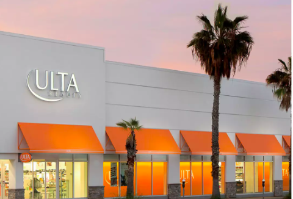

Do you shop at Ulta?
November 19, 2022
By Tayonna Botello
Do you love the fabulous hair, skin, and beauty products offered? Are you just shopping for perfumes and makeup? By entering a phone number and email address Ulta has been thanking its loyal customers or just general customers. They want you to feel loved. The membership is free and for every $1 dollar you spend you receive 1 point. You earn a point on every product you buy whether that be in store, on the app, or just on the general website. When you receive 100 points. The points expire after 1 year. Points appear immediately after your purchase. You can earn points faster with bonus- point offers. You also get a free gift from Ulta on your birthday but if you are a Platinum or Diamond member you get a free extra gift. You can view your points on the website, mobile app, or email statements. Another bonus is you earn double points when you spend money during your birthday month. This is all a free program when you buy your favorite products from your favorite brands or celebrities. Ulta beauty products are all beauty based and high end products and to know you get amazing rewards. I walked into Ulta and bought some of my favorite products like normal and I learned I had 70 dollars to use for my next order. I paid 3 dollars for my order that day and I would say I don't spend a lot of time there. I really appreciate the rewards and felt very loved at Ulta with the free rewards program.
